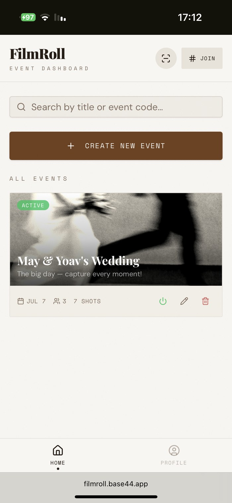
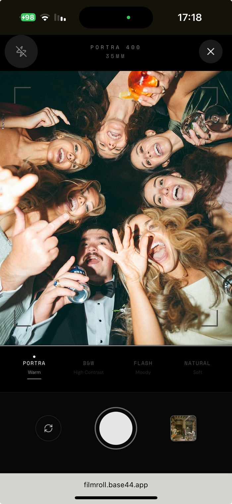
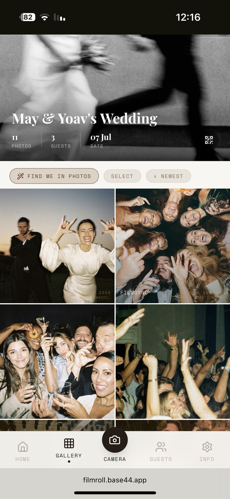
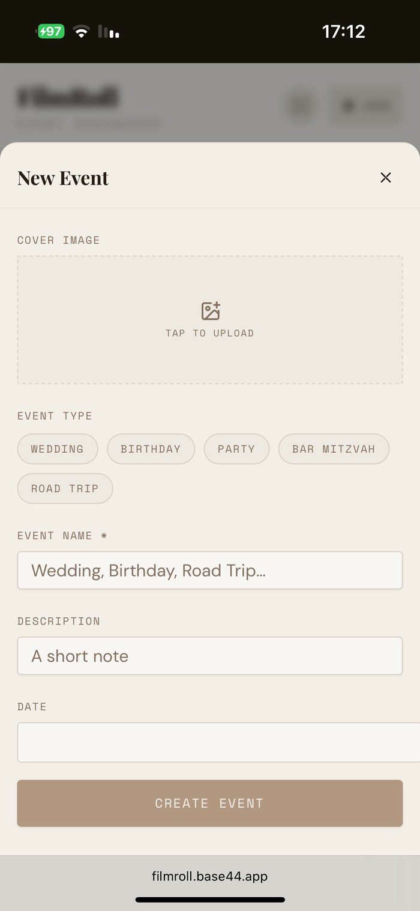
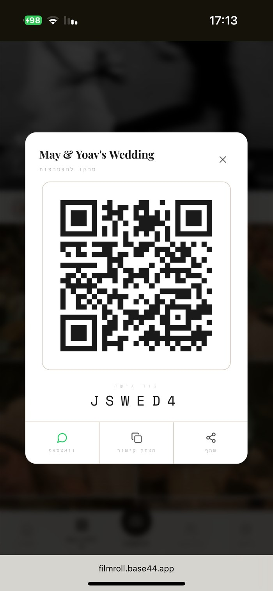
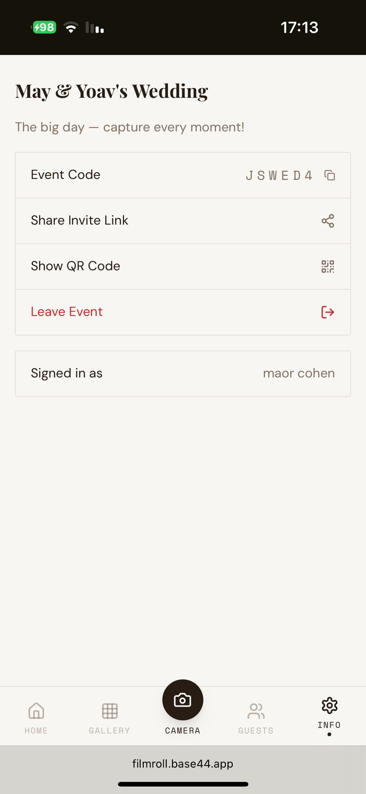

FilmRoll, a Digital Disposable Camera for Weddings
I love disposable cameras at weddings, but they get lost and the photos wait weeks. I designed and built FilmRoll, a shared camera roll guests join in seconds.
Problem
Disposable cameras are expensive to buy for every table, easy to lose, and the photos stay locked until someone develops the film.
Solution
One shared digital roll guests join with a code or QR, with film-stock looks so every photo still feels like a disposable.
Goal
Get more guests shooting, and everyone seeing the photos the next morning.
Role Product design, UX/UI, built solo · Tools Figma, Base44 · Platform Mobile web
User Research
Who uses FilmRoll at a wedding, and what they need
KPIs
How FilmRoll moves the experience: disposable cameras vs. FilmRoll
Guests who took photos
Saw the photos the next day
Found photos of themselves
Share of guests. “FilmRoll” numbers are the targets I set for the design.
Research & Principles
The starting point was a real annoyance: disposable cameras that disappear and photos nobody sees for weeks. Three rules came out of it:
- Keep the limits: a few film looks, not an editing suite
- Remove the friction, not the ritual: no download, no sign-up
- Shared by default: one roll for the whole event
Process & Decisions
- A camera, not a filter picker, with named film stocks
- Retro date-stamps on every shot
- Join in one tap with a code, a QR or a link
- One shared roll with a "Find me in photos" tool
How I thought it through
What I saw
Cameras lost by the second hour
Film developed weeks later, if ever
Buying a camera for every table
What users said
“Where did the camera go?”
“When can we see the photos?”
“I don't want to download an app”
Ideas
A QR code on every table
Film looks instead of filters
A live gallery for everyone
What I chose
Join with a code, QR or link
A shared roll per event
A date-stamp on every photo
Key screens
Every screen feels like a physical object first and software second.






Tested at a real wedding
I designed and built FilmRoll myself in Base44, then handed it to the guests at May & Yoav's wedding, who filled one shared roll over the night.
What I took away
Constraints give a product character. The limits are what make it feel special.
No-code is still design work. Every flow still had to be designed and argued for.
Nothing tests like a real event. Real guests showed things no mockup could.